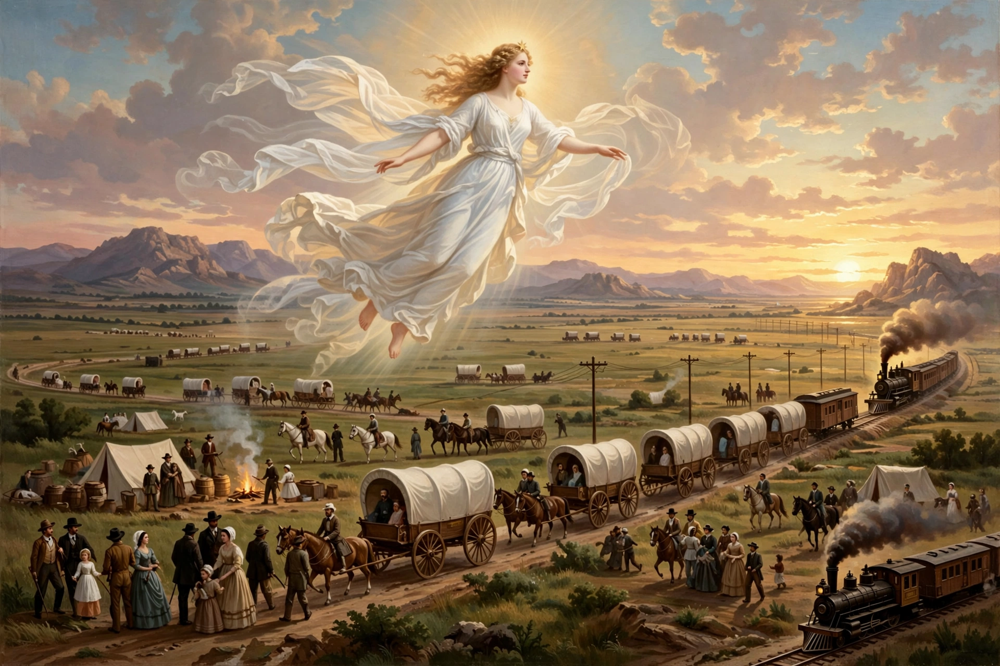

Manifest destiny was the belief in 19th-century United States that American settlers were destined — by God, its advocates believed — to expand throughout North America. The phrase was coined in 1845 by journalist John L. O'Sullivan in support of annexing Texas and the Oregon Country.

| Coined | 1845, John L. O'Sullivan |
|---|---|
| Era | 19th century United States |
The idea combined American exceptionalism, romantic nationalism, and beliefs in the superiority of Anglo-Saxon institutions. It provided ideological justification for territorial expansion, often at the expense of Native Americans and Mexico.
Manifest destiny underlay the annexation of Texas, the Oregon Treaty, the Mexican–American War and the Mexican Cession, and policies of Native American removal and dispossession. Its legacy remains debated in discussions of American imperialism.